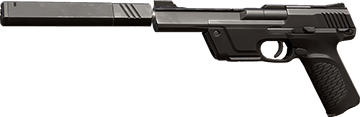
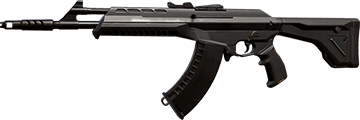
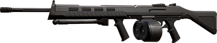
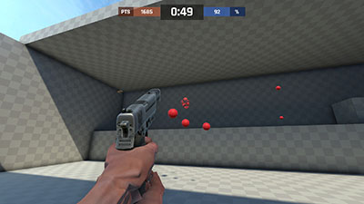
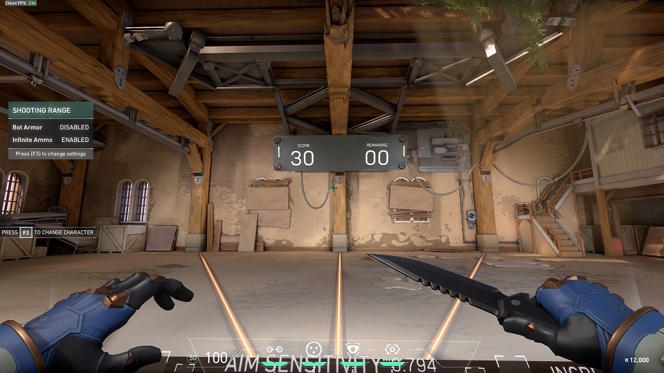

My Favorite Weapons
Favorite Side Arm
Ghost - "The Ghost is accurate and carries a large magazine if you miss. Distant targets require a controlled fire rate. Quickly tap the trigger when you can see the whites of their eyes."
Favorite Rifle
Vandal - "Extended fire results in less stability, however. The Vandal retains high damage over distance and rewards those who focus single shots at a target’s head."
Favorite SMG
Ares - "The Ares’ large magazine means it excels at suppressive fire or dealing heavy damage to clustered groups."
Excerpts from Valorant's official arsenal page.
What I Like to Do to Improve
I like to use Aim Lab (available for free on Steam) to warmup and train my aim before a match. I usually have a few playlists with different exercises, so if I don't have time to do my one hour playlist, I can switch to another one that's shorter. I also use The Range in Valorant to practice spray patterns and shooting at bots.
My Favorite Maps
Favorite Map to Defend
Bind - "Two sites. No middle. Gotta pick left or right. What’s it going to be then? Both offer direct paths for attackers and a pair of one-way teleporters make it easier to flank."

Favorite Map to Attack
Ascent - "An open playground for small wars of position and attrition divide two sites on Ascent. Each site can be fortified by irreversible bomb doors; once they’re down, you’ll have to destroy them or find another way. Yield as little territory as possible."